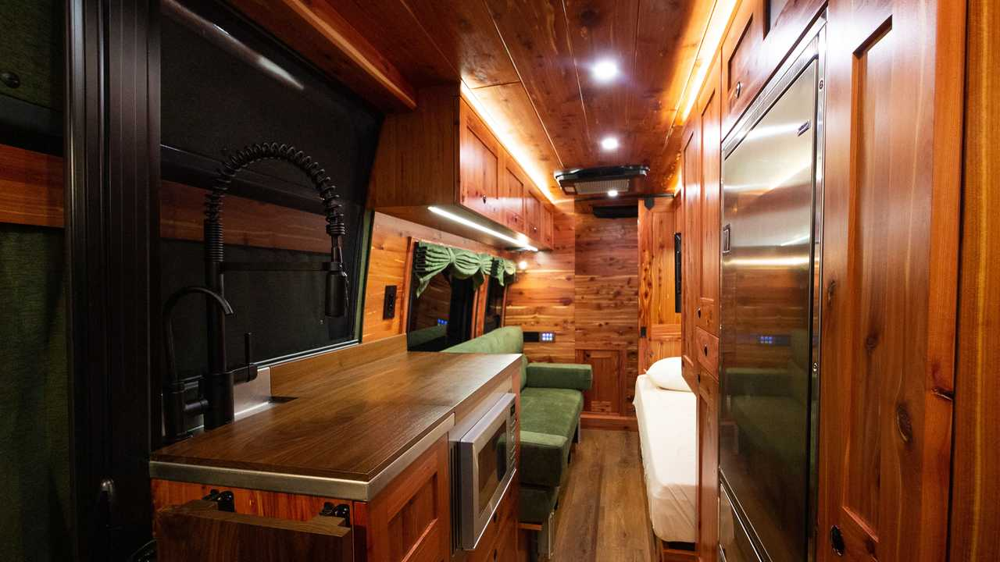
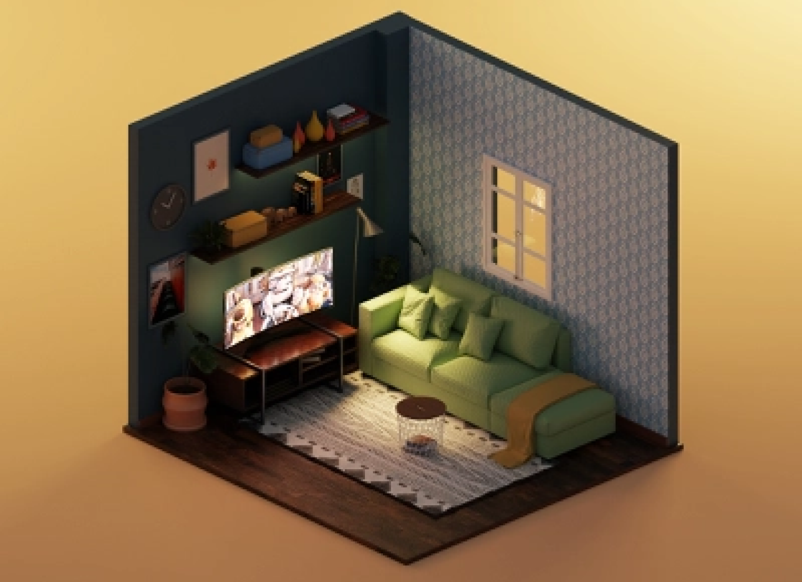
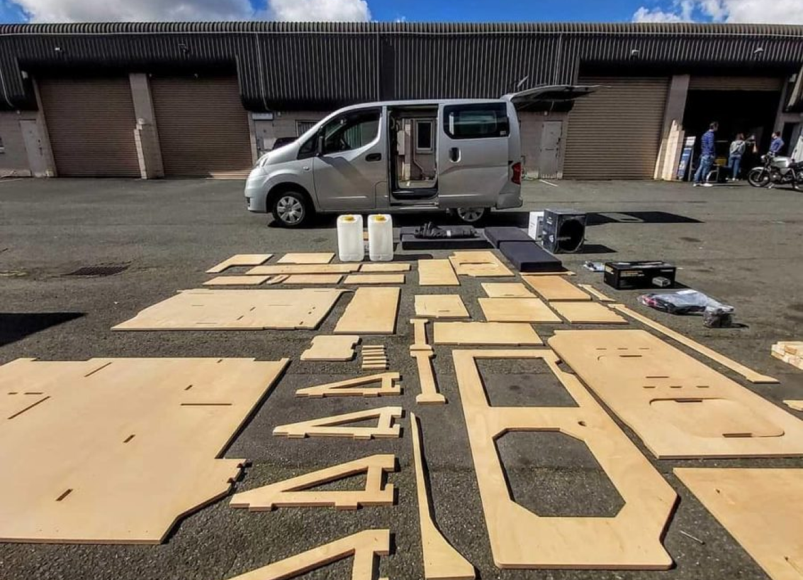

Ive always had this dream to travel and live out of a camper or rv. over time the dream kind of died because i though it was just unrealistic, especially because of how exspensive everything is!!

That doesn’t mean i completly gave up on the idea. i was just more or less procrastinating or putting it off for later. That was until it got more dificult and overwhelming to watch people on instagram and all over social media living their dreams and doing exactly what they truly love. not because they were doing it but because. it was a constent reminder of what i should’v been doing as well.
So im overwhelmed by the dificulty and expenses, and im overwhelmed by not doing it and settleing for the life that chose me. its a lose lose right? absolutely not!!!! i just had to come up with a strategy. what can i do to be able to affored this because one thing that i dont want to do is take short cuts and go super cheap. let me first find out how much im making and then find out where its all going
I just paid my truck off so that wasn’t taking any of my money anymore. I pay for all my stuff up front so i wasn’t doing payments on anything else either. Rent!! rent was using up most of my money, rent and utilities. i was paying about $800 for an apartment that i only lived in two days a week since i lived so far from work i didnt want to commute everyday so i just stayed at a friends house
Could i survive without my own apartment im only 21 and i dont have a lot to lose, and if i realy want this im going to have to make some sacrifices. So i did exactly that. ended my lease and and started living between my friends and my parents so i could basicly throw all my money into my project. I immediately started drawing out plans and shortly after i had enough money to start buing materials
